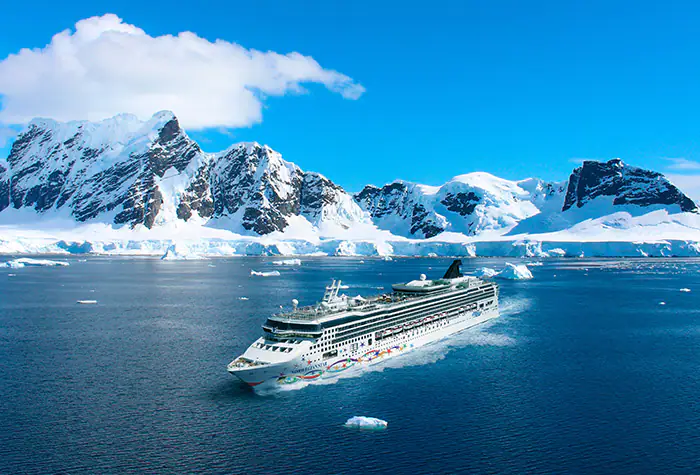
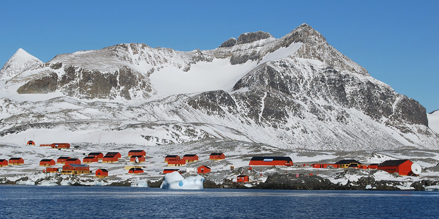

Cruceros
Si bien al continente antártico no se puede acceder como a otros territorios, existen cruceros que recorren algunas islas y glaciares, además de hacer alguna parada en este continente. Prepárate para zarpar a bordo del Norwegian Star y descubrir el extremo sur del Polo Sur, la Antártida. Observa icebergs asombrosos y pingüinos en la playa desde la cubierta, mientras disfrutas de momentos únicos en la vida. Te espera la experiencia más emocionante de tu vida.

